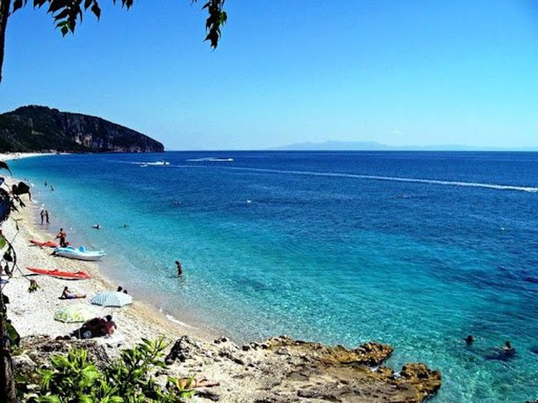

Dhermiu beach
Renting a speed boat and visiting the Gjipe Bay. Take a walk up the Gjipe Canyon, around 4 km, to the waterfall of Petasma that is 75 m high. Do not forget to spend some hours at Perivoli Beach; you'll have about 3 km of beach all for yourself.

The cave of the Pirates
No one visities Dhermi without stoping at Pirate's cave. The famously gorgeous cave in the southern Ionian Riviera has inspired writers and continues to welcome the greatest number of visitors through its gorgeous entrance, naturally constructed on the pink cliffside.